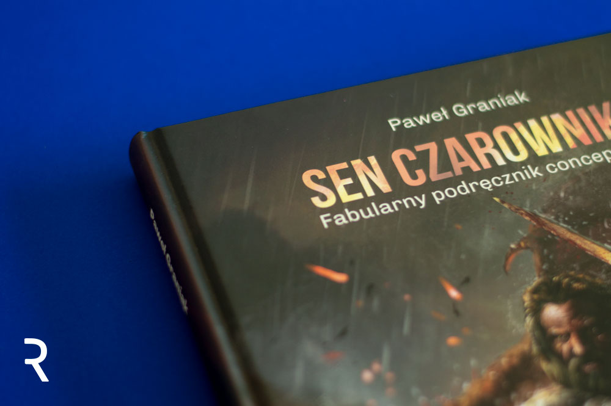
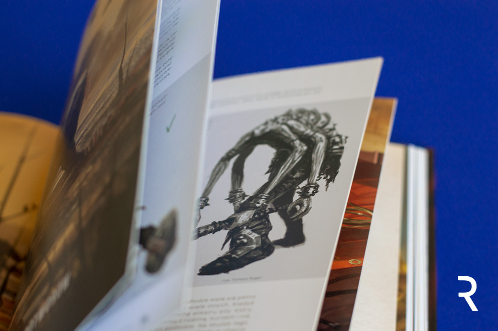

Sen Czarownika. Fabularny podręcznik concept artu.
Niektórzy z Was z pewnością kojarzą Pawła Graniaka, który w 2017 roku
opowiadał o projektowaniu potworów na konferencji GrafConf. Zajmuje się
on zawodowo prowadzeniem szkoleń z projektowania na potrzeby gier, pisze
scenariusze i jest game designerem. Stworzył szkołę concept artu i digital
paintingu (Potęga Obrazu), w której można nauczyć się pracy concept artysty.
Recenzowana książka stanowi syntezę wiedzy, którą Paweł Graniak przekazuje
swoim czytelnikom. Za całość odpowiedzialny jest jednak nie tylko on sam,
ale również zespół ilustratorów i konsultantów, a wśród nich: Ewa Zabaryło-Duma,
Monika Sochacka, Ania Długaszek, Tomasz Ryger i Tomasz Kuczyński.
Oceniamy książkę po okładce
„Sen Czarownika. Fabularny podręcznik concept atu” to książka formatu A4 (210×297 mm), licząca 140, w pełni kolorowych stron. Całość została oprawiona w grubą, twardą okładkę z fantastyczną ilustracją, która bardzo zachęca do zgłębiania zawartości. Przypomina bardziej ilustracje zdobiące opowieści fantasy, niż podręczniki do nauki rysunku, co zdecydowanie działa na jej korzyść.Zawartość została wydrukowana na grubym, kredowym, śliskim papierze. Z powodzeniem oddaje on głębię ilustracji i gwarantuje, że nie będziemy widzieć, co jest na kolejnej stronie zanim przełożymy kartkę. Nie jest to rodzaj papieru, który czyta się najprzyjemniej. Potrafi odbijać światło, co utrudniać może czytanie, ale w ostatecznym rozrachunku dla tego rodzaju publikacji jest on chyba najbardziej odpowiedni. Gwarantuje trwałość i sprawdza się przy konieczności oddawania subtelnych niuansów barwnych.
Co znajdziemy w środku?
Zawartość podzielona została na dwie części. Pierwszą z nich, zatytułowaną „Concept Art” autor podzielił dodatkowo na podrozdziały dotyczące projektowania konkretnych elementów gry (postaci, środowiska, potworów i maszyn), wskazówki dotyczące projektowania z myślą o grafice trójwymiarowej oraz zagadnienie narracji w ilustracji. Druga część zatytułowana została „Malarstwo cyfrowe” i zawiera praktyczne informacje dotyczące tego, czym i w jaki sposób tworzyć ilustracje cyfrowe.Podręcznik porusza fundamentalne kwestie z zakresu rysunku postaci ludzkiej oraz sposobów jej zniekształcania i tworzenia sylwetek bohaterów innych ras, wykreślania perspektywy czy kompozycji. Co odróżnia go od innych publikacji stawiających sobie za cel nauczenie podstaw rysunku, to ukierunkowanie na projektowanie tych wszystkich elementów na potrzeby większego projektu.
Graniak dużo pisze o roli danego konceptu w fabule, pisaniu opowieści za pomocą obrazu i myśleniu projektowym. Uczy patrzenia na projektowaną postać w szerszym kontekście, by spełniała ona swoją rolę w grze, a to oznacza coś więcej niż tylko ładną ilustrację.

Moim zdaniem
Moje oczekiwania wobec książki były bardzo duże. Kiedy dowiedziałam się, że „Sen Czarownika” będzie miał jedynie 140 stron, byłam lekko zaniepokojona. Znam Pawła Graniaka jako wykładowcę (brałam udział w bootcampie „Concept Art i Digital Painting”) i wiem, że ma on ogromną wiedzę i potrafi naprawdę długo i treściwie opowiadać. Zamknięcie tego wszystkiego w 140 stronach wydawało mi się po prostu niemożliwe. Ku mojemu zaskoczeniu, książka zawierała wszystkie informacje, których oczekiwałam i wiele więcej.Zacznijmy od zdecydowanych walorów publikacji. Treść podręcznika jest syntetyczna, dobrze i jasno napisana. Zawiera praktyczne wskazówki z ukierunkowaniem na osoby początkujące. Paweł Graniak nie owija w bawełnę, pisze prostym językiem, który przyjemnie się czyta. „Odhacza” kolejne punkty z listy rzeczy, które rysownik powinien wiedzieć, by stać się concept artystą.
Niestety nie sposób nie zauważyć, że poszczególne rozdziały są bardzo krótkie i to chyba największa wada recenzowanej książki. To sprawia, że lektura „Snu Czarownika” pozostawia pewien znaczący niedosyt, zarówno jeśli chodzi o treść, jak i ilość przykładów. Dodatkowo sprawia to, że publikację traktować należy bardziej jako wstęp do rozmowy o concept arcie, choć autor wyraźnie zaznacza, że taki był jego cel.
Co się tyczy fabularnej części, tutaj ocenę pozostawiam znawcom literatury fantasy. Treść historii ma swoje uzasadnienie w kolejnych rozdziałach podręcznika, dlatego mnie osobiście nie przeszkadzała.
Paweł Graniak zdecydowanie nie zdradza wszystkich swoich sekretów. Z takim doświadczeniem w branży z pewnością ma do zaoferowania znacznie więcej. Niemniej „Sen Czarownika. Fabularny podręcznik concept artu” ma szansę stać się pozycją kultową wśród miłośników gier, którzy pragną je również tworzyć. Książkę poleciłabym przede wszystkim początkującym artystom, którzy rozwijają swój warsztat i chcieliby dowiedzieć się, jakie jeszcze umiejętności są pożądane w branży gier.
Co się tyczy fabularnej części, tutaj ocenę pozostawiam znawcom literatury fantasy. Treść historii ma swoje uzasadnienie w kolejnych rozdziałach podręcznika, dlatego mnie osobiście nie przeszkadzała.
Paweł Graniak zdecydowanie nie zdradza wszystkich swoich sekretów. Z takim doświadczeniem w branży z pewnością ma do zaoferowania znacznie więcej. Niemniej „Sen Czarownika. Fabularny podręcznik concept artu” ma szansę stać się pozycją kultową wśród miłośników gier, którzy pragną je również tworzyć. Książkę poleciłabym przede wszystkim początkującym artystom, którzy rozwijają swój warsztat i chcieliby dowiedzieć się, jakie jeszcze umiejętności są pożądane w branży gier.
Autor Monika Suchodolska